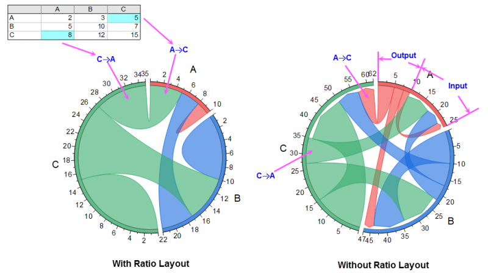
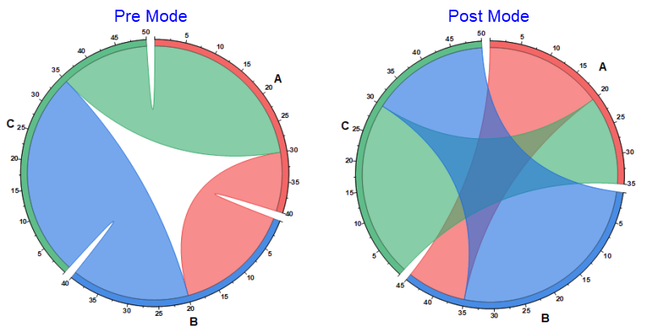

Die Registerkarte Layout (Plot Details) für Sehnendiagramme und Diagramme mit hierarchischem Edge Bundling
PD-Layout-tab
Diese Registerkarte wird verwendet, um die Layouteinstellungen für das Sehnendiagramm und das Diagramm des hierarchischen Edge Bundlings vorzunehmen.
|
|
|
Sehnen
|
Hierarchisches Edge Bundling
|
Richtung
Legen Sie fest, wie die ringförmigen Knoten in der Winkelrichtung angeordnet werden sollen, im oder gegen den Uhrzeigersinn.
Knotenanfang bei
Legen Sie den Winkel der ersten Knotens fest. Wenn Sie ihn auf 0 setzen, beginnen die Knoten auf der Position 3 Uhr.
Radius (%)
Legen Sie den Radius des Diagramms fest. Wenn Sie ihn auf 100 setzen, ist er der Höhe des Layers.
Verhältnislayout(Nur Sehnen)
Zeigen Sie Eingabe und Ausgabe in einer Verbindung, so dass Sie diese Option aktivieren können, um den Austausch zwischen zwei Knoten innerhalb einer Verbindung zu zeigen.

Vor-Modus, Nach-Modus (Nur Sehnen)
Beim Darstellen von Flüssen mit Verhältnislayout kann man Gewichtungen vor dem Bewerten des Netzflusses bewerten oder Gewichtungen, die sich aus den Netzflüssen ergeben. Die Schaltflächen Vorher-Modus und Nachher-Modus ermöglichen die Anzeige von beiden Szenarien.

In dem einfachen Beispiel oben kann man sehen, dass im Nachher-Modus der Knoten B 5 Einheiten gewinnt (von 40 auf 45 steigt), der Knoten A 5 Einheiten verliert (von 40 auf 35 sinkt) und der Knoten C keine Netzänderung erfährt.
Ordnung (Nur Sehnen)
Steuert die Anordnung der Knoten und Verbindungen.
Knotenordnung nach
Legen Sie fest, wie die Knoten im Kreis geordnet werden.
Ordnen Sie die Knoten nach:
- Kein: Die Knoten werden gemäß der ursprünglichen Ordnung in den Quelldaten angeordnet.
- Name: Die Knoten werden gemäß ihres Namens in alphabetisch, aufsteigend oder absteigend, angeordnet.
- Gesamtgewichtung: Die Knoten werden gemäß der Gesamtgewichtung (einschließlich der Eingabe und der Ausgabe), aufsteigend oder absteigend, angeordnet.
- Ausgabe Gesamt zuerst: Die Knoten werden gemäß der Eingabe ihrer gesamten Gewichtung, aufsteigend oder absteigend, angeordnet.
- Eingabe Gesamt zuerst: Die Knoten werden gemäß der Ausgabe ihrer gesamten Gewichtung, aufsteigend oder absteigend, angeordnet.
- Verhältnis Ausgabe/Eingabe: Die Knoten werden gemäß dem Verhältnis von Ausgabe und Eingabe jedes Knotens, aufsteigend oder absteigend, angeordnet.
- Verhältnis Eingabe/Ausgabe: Die Knoten werden gemäß dem Verhältnis von Eingabe und Ausgabe jedes Knotens, aufsteigend oder absteigend, angeordnet.
Verbindungsordnung nach
Legen Sie fest, wie die Verbindungen angeordnet werden sollen, die aus dem aktuellen Knoten ausgeben bzw. in den aktuellen Knoten eingeben. Wenn Sie Verhältnislayout ausgewählt haben, ist dieses Bedienelement nicht verfügbar.
- Ausgabe zuerst: Die Ausgabeverbindungen werden zuerst angeordnet, angefangen vom ersten Hilfsstrich des aktuellen Knotens.
- Eingabe zuerst: Die Eingabeverbindungen werden zuerst angeordnet, angefangen vom ersten Hilfsstrich des aktuellen Knotens.
Wenn Sie Eingabe zuerst oder Ausgabe zuerst ausgewählt haben, können Sie entscheiden, wie Sie die Eingabe-/Ausgabeverbindungen anordnen möchten:
- Gewichtung aufsteigend: Die Eingabe-/Ausgabeverbindungen werden gemäß des Gewichtungswerts der Verbindungen aufsteigend angeordnet.
- Gewichtung absteigend: Die Eingabe-/Ausgabeverbindungen werden gemäß des Gewichtungswerts der Verbindungen absteigend angeordnet.
- Position der Zielknoten: Die Eingabe-/Ausgabeverbindungen werden gemäß der Position des Zielknotens angeordnet. In diesem Fall werden die Selbstverbindungen an erster Stelle angeordnet.
Verbindungszeichenreihenfolge
Legen Sie die Zeichenreihenfolge der Verbindungen innerhalb des Kreises des Sehnendiagramms fest.
- Nach Knoten- und Verbindungsordnung: Folgen Sie der Ordnung der Knoten und Verbindungen in den Quelldaten.
- Größere Verbindung oben: Die breiteren Verbindungen werden oben angesie
- Größere Verbindung oben: Die schmaleren Verbindungen werden oben abgelegt.
Blasen für Blätter(Nur hierarchisches Edge Bundling)
Legen Sie fest, ob für alle Blätter Blasen gezeigt werden sollen. Sobald Sie dieses Kästchen aktiviert haben, wird die Registerkarte Symbol angezeigt, damit Sie die Blasen steuern können.
Knoten für Teildatensatz(Nur hierarchisches Edge Bundling)
Legen Sie fest, ob für Blätter bzw. Teildatensätze Knoten gezeigt werden sollen. Sobald Sie dieses Kästchen aktiviert haben, wird die Registerkarte Knoten angezeigt, damit Sie die Knoten steuern können.